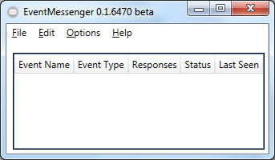
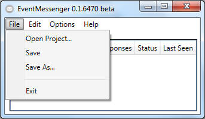

Main Window - Open and Save

This is the Main Window

- "Open Project":
- Open a previously saved project.
- "Save":
- If you select the "Save" option, the Events and Responses you
have created could be saved to a default database. These could be
automatically loaded after program start.
- "Save as...":
- You might want to create more than one Project. Just save it to a
different location than the default "database.xml"